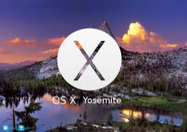
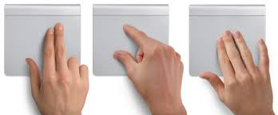
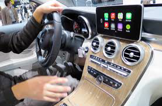

IL SISTEMA OPERATIVO E LE INNOVAZIONI
SISTEMI OPERATIVI APPLE
Il sistema operativo è il software fondamentale per utilizzare un computer. Permette all'utente di comunicare con la macchina e quindi lanciare programmi, controllare le periferiche etc. I più comuni sistemi operativi includono Windows, Android e Mac OS.
Mac OS è il sistema operativo di Apple, è l'acronimo di Macintosh Operating System.
La prima versione risale al 1984 e aveva la caratteristica di essere completamente grafico, ciò favorì la popolarità della GUI (interfaccia grafica utente) ed è ampiamente riconosciuto il ruolo che il Mac OS ebbe nella loro diffusione.
Questo sistema operativo ha due famiglie: il Mac OS Classic e il Mac OS X commercializzato nel 2001 con la versione 10.0 Cheetah, sino all'ultima versione OS X Yosemite 10.10.3 che migliora il supporto per il monitor a 4K supportando risoluzioni di 3840*2160 a 30 Hz o 4096*2160 a 24Hz usando un adattatore HDMI.
Il Mac OS Classic non aveva un nome specifico in quanto era parte integrante del prodotto; la versione 7 fu commercializzata semplicemente come system 7.
Il sistema operativo prese il nome di Mac OS quando la Apple decise strategicamente di concedere il sistema operativo ad altri produttori di computer per realizzare cloni del Mac.
Il Mac OS X non è un aggiornamento del Classic ma è stato completamente riscritto e costituisce di fatto un sistema operativo diverso.
Apple ha anche reso liberamente disponibile una parte del codice sorgente con una licenza Opensource (licenza concessa).
SISTEMI HARDWARE APPLE
A fine giugno 2005 la Apple ha deciso di non utilizzare più i processori commercializzati da IBM ma installare nelle loro macchine quelli INTEL per avere prestazioni migliori nei loro personal computer (portatili).

Con questa nuova architettura ha dato la possibilità di avviare in dual boot (possibilità di scegliere al momento dell'avvio o boot del computer, tra due o più, sistemi operativi precedentemente installati) anche i sistemi Windows e Linux, grazie allo sviluppo di Boot Camp (piccolo software che permette di installare facilmente OS).
Quando si parla di Apple si parla di innovazione, qualità e soprattutto di intuizioni geniali.
Il tutto parte dalla voglia di giovani sognatori come Steve Jobs, Steve Wozniak, Ronald Wayne di portare nelle case degli americani un computer, quindi di rendere questa tecnologia accessible a tutti.
questo risultò una sfida fin dal principio, in quanto anche Bill Gates e la sua Windows avevano lo stesso obbiettivo, e le due società neonate cominciarono la loro guerra a colpi di innovazione tecnologica.
I servizi spinti da Cupertino (Apple viene chiamata così perchè è il posto in cui ha la propria sede) sono innumerevoli, anche idee non create in casa, ma semplici soluzioni che sono state adottate dalla mela per migliorare l'esperienza dell'utente, decretandone il successo globale.
La prima mossa azzeccata da Steve Jobs fu adottare stili diversi di carattere, quando venne avviato il progetto Macintosh, per offrire una scelta diversa da solito nello stile e migliorare l'esperienza dell'utente con la macchina.
Il successo del mouse e dell'interfaccia grafica si devono a Apple, da quando sono stati adottati per il primo Macintosh, divenerro due fondamentali accessori per usare un computer con facilità:
L'interfaccia grafica utente, nota anche come GUI (Graphical User Interface), è un tipo di interfaccia utente che consente di interagire con la macchina manipolando oggetti grafici convenzionali.
Il mouse è un dispositivo o periferica di input di un computer in gradi di inviare in ingresso al sistema un comando da parte dell'utente in modo tale che ad un suo movimento su una base solida piana ne corrisponda uno anologo da parte di un indicatore sullo schermo del monitor chiamato anche puntatore.
Apple non ha inventato nemmeno queste tecnologie, ma è stata la prima a utilizzarli sulle prime macchine prodotte da Macintosh. I floppy disk in formato "compatto" sono un invenzione attribuita a Sony ed esordiscono sul mercato con il primo Macintosh, le porte USB di serie sono presenti a partire dalla prima generazione di iMac nata nel 1998.
Sempre sull'iMac e poi successivamente adottato anche sull'iBook fa la sua comparsa il primo WIFI, chiamato anche Airport e lanciato negli Stati Uniti da Apple, che paga prima di tutti la tassa richiesta dall'ente americano per concedere l'utilizzo delle radiofrequenze.
Oltre ad essere stata la prima a sviluppare un computer portatile, Apple, ha innovato questa nuova macchina nel 1994 con la serie PowerBook 500 con Il touchpad (in italiano tappetino tattile), per Mac e BlackBerry trackpad, è un dispositivo di input presente nella maggior parte dei computer portatili.
Viene utilizzato per spostare il cursore captando il movimento del dito dell'utente sulla sua superficie liscia, che si trova alla base sotto la tastiera del 80% dei computer portatili in circolazione.

Il multitouch e l'accelerometro non sono stati certo una scoperta di Apple, ma ` stata l0'azienda americana a portarli davanti all'attenzioen delle masse mentre, nel settore dell'intrattenimento videoludico, aveva fatto mosse simili la Nintendo con DS e Wii. L'iPhone e l'iPad sono basati su questo tipo di mems (Micro Electro-Mechanical Systems), speciali circuiti che hanno permesso di costruire macchine sempre più piccole consentendo di rendere la nanotecnologia una realtà, in cui il ruolo da pioniere nella ricerca e vendita è stato per lungo tempo dell'azienda italofrancese STMicroelectronics, che li ha venduti ad Apple e Nintendo.
Nel 2014 venne l'idea geniale del CarPlay, che è la vera innovazione di quell'anno, rilasciato solo per alcune marche come Ferrari, Mecedes, Jaguar CarPlay ti assiste nella guida tramite siri, permette di leggere sms, mms, dal tuo iPhone semplicemente chiedendoglielo, assiste con mappe per iOs, connettibile con iTunes e iTuns radio, carplay cambierà il modo di connettere l'auto ai dispositivi mobili.
